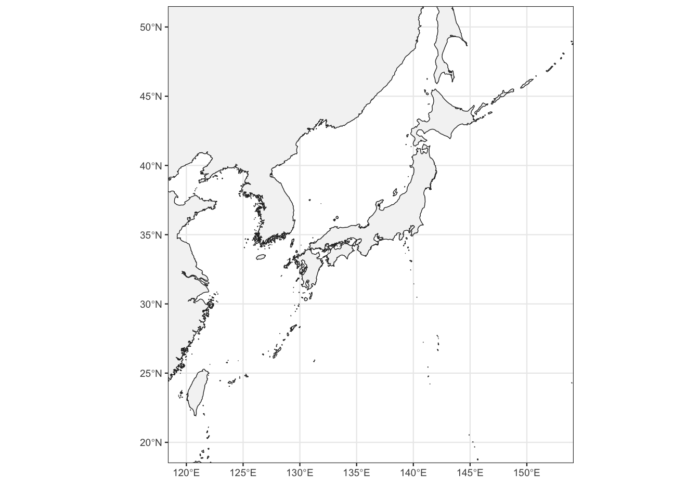
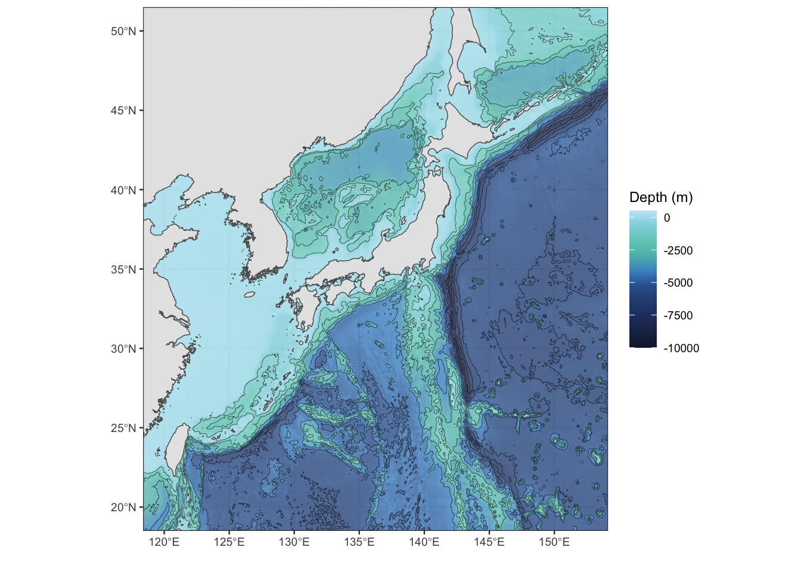

# libraries
library(tidyverse)
library(rnaturalearth)
library(sf)
library(ggprism)
library(marmap)
# theme of ggplot
theme_set(theme_bw(base_size = 9))
# color setting
kuro = "#2b2b2b"
namari = "#7b7c7d"
landcol = "#f4f4f4"
linecol = kuro# read land polygon data
land <- ne_download(scale = 10, type = "land", category = 'physical',returnclass = "sf")## OGR data source with driver: ESRI Shapefile
## Source: "/private/var/folders/03/lkwk3wn90cx8hjfz6f1hndwm0000gn/T/RtmpjC43Fw", layer: "ne_10m_land"
## with 11 features
## It has 3 fieldslat_view_range <- c(20, 50)
lon_view_range <- c(120, 152.5)
basemap <- ggplot() +
geom_sf(
data = land,
size = 0.25,
fill = landcol,
color = linecol
) +
scale_y_continuous(
breaks = seq(20, 50, by = 5)
) +
scale_x_continuous(
breaks = seq(120, 150, by = 5)
) +
coord_sf(xlim = lon_view_range, ylim = lat_view_range) +
labs(x = "", y = "")basemap
### おまけ：深度
# download bathymetry data
filedir <- "gis_data"; if (!dir.exists(filedir)) dir.create(filedir)
lon_range <- c(100, 165)
lat_range <- c(5, 60)
oceandat <- marmap::getNOAA.bathy(
lon_range[1], lon_range[2],
lat_range[1], lat_range[2],
resolution=4, antimeridian=FALSE,
keep=TRUE, path=filedir
)## File already exists ; loading 'marmap_coord_100;5;165;60_res_4.csv'# 深度のカラーパレット（GMT風）
bathy_colors <- colorRampPalette(
c("#141d35", "#21335c", "#2a4677", "#315a92",
"#4898d3", "#65ccac", "#80d0d9", "#c3e8f7"))
bathymetry <- ggplot(data = oceandat, aes(x = x, y = y)) +
geom_raster(aes(fill = z), alpha = 0.8) +
scale_fill_gradientn(limits = c(-10000, 500), colors = bathy_colors(10)) +
geom_contour(
aes(z=z),
breaks = seq(-1000, -9000, by = -1000),
color = "black", size = 0.1
) +
labs(x = "", y = "", fill = "Depth (m)") +
geom_sf(data = land, inherit.aes = FALSE, size = 0.25) +
coord_sf(xlim = lon_view_range, ylim = lat_view_range)bathymetry